Fußmarsch durch Sizilien in 29 Tagen
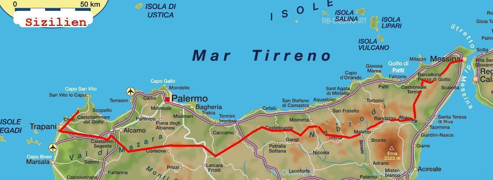
21.3.2011 - -18.4.2011 Fußmarsch in 29 Tagen ca. 700 km durch Sizilien mit Klaus Schwarz,
Tag 7
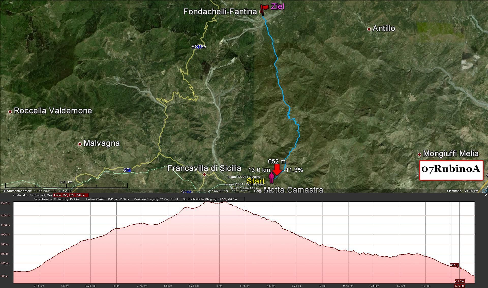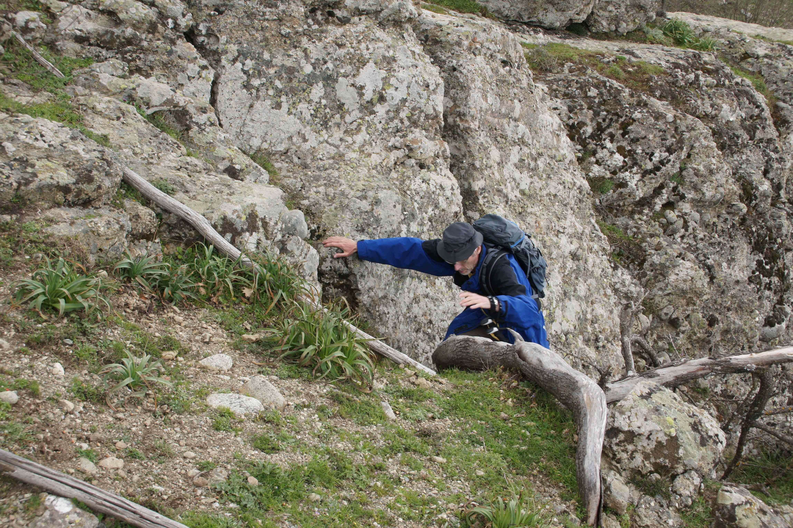
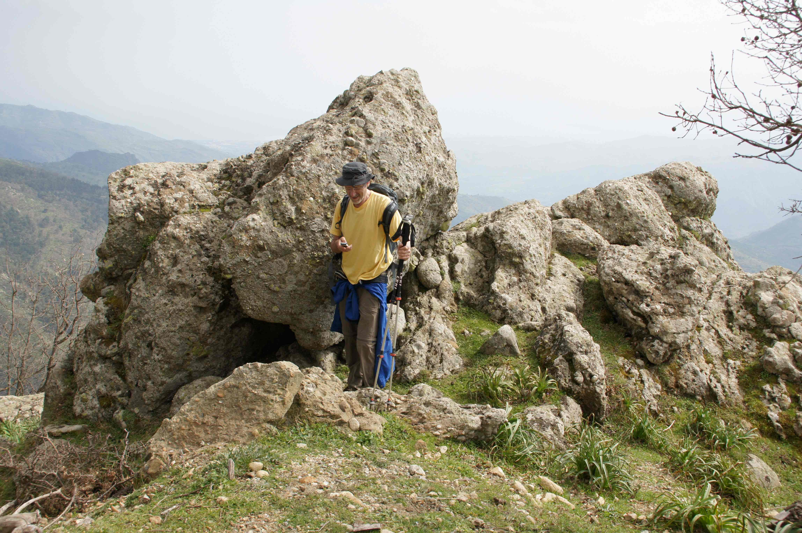

Schlamm am Tag 11
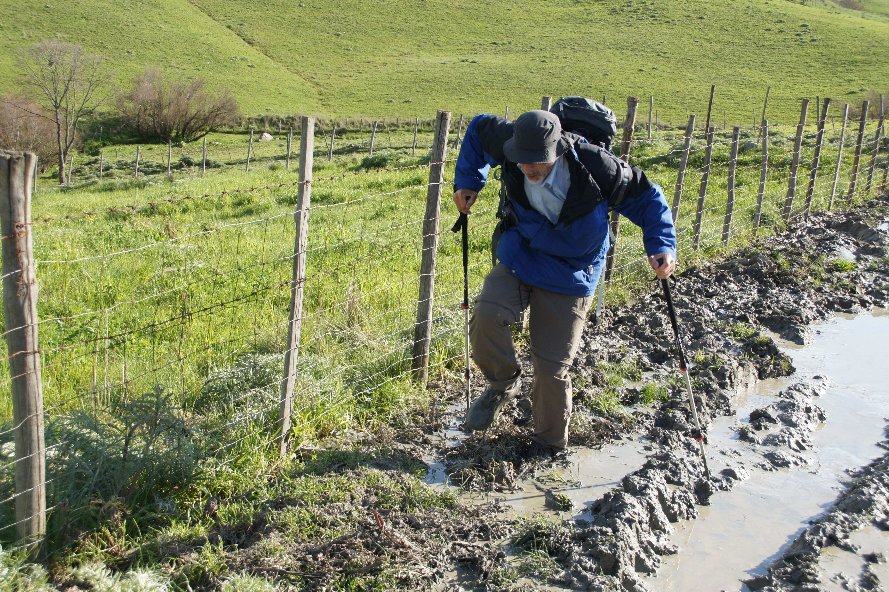Hilfe ich versinke, am 11. Tag nach Randazzo, wäre ich beinahe im Schlamm versunken!
Klaus am 11. Tag
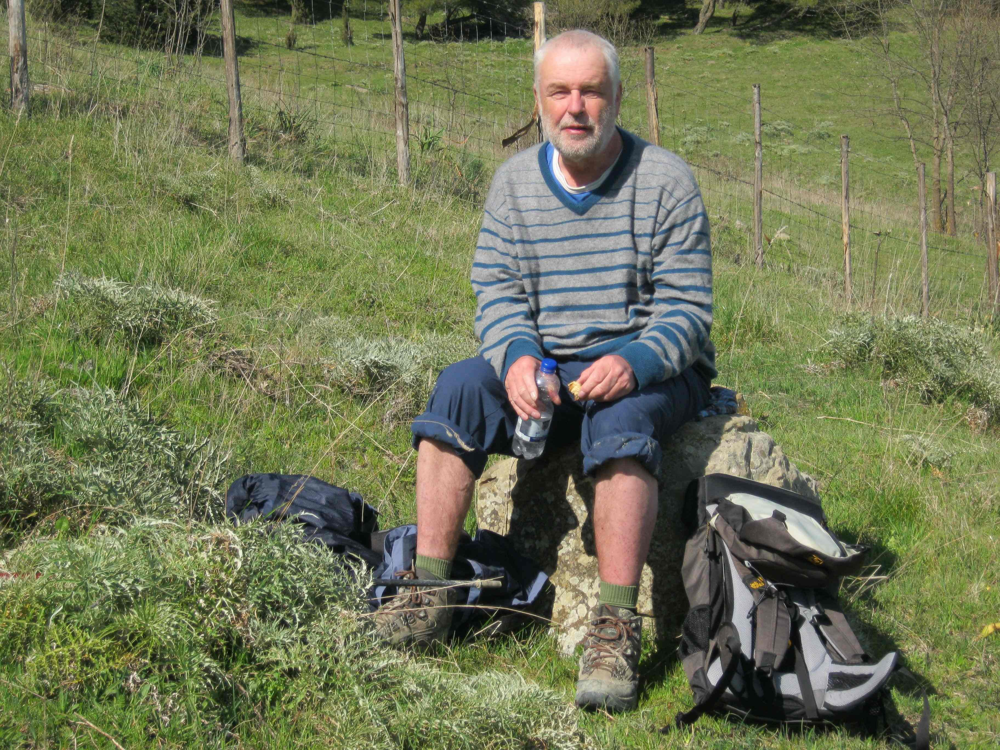in der Nähe von Troina
Abstieg vom Monte Pizzo am 17. Tag
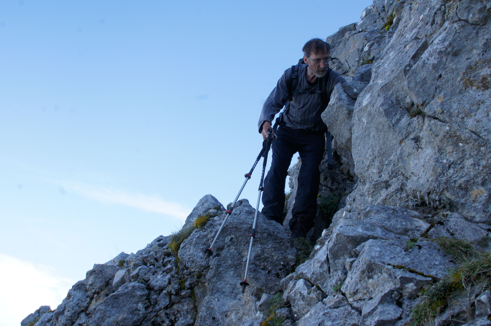 Der Pizzo Carbonara ist die höchste Erhebung der Madonie und mit einer Höhe von 1979 m der höchste nichtvulkanische Berg Siziliens. Koordinaten: 37° 53′ 39″ N, 14° 1′ 31″ O
Tag 19
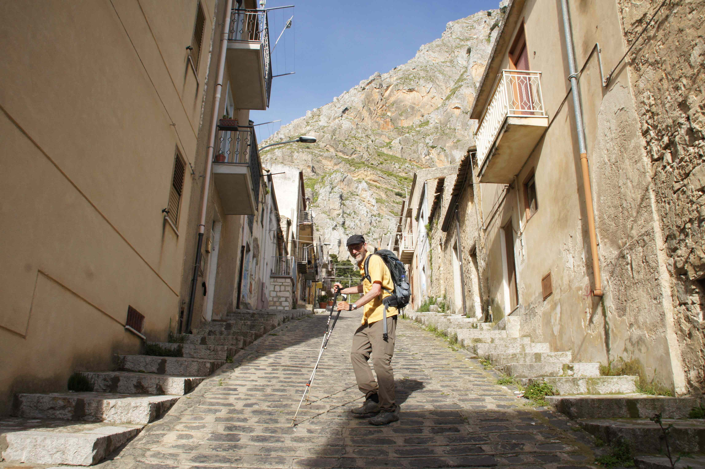in der Nähe von Mandria del conte
Begegnung mit glücklichen Rentern
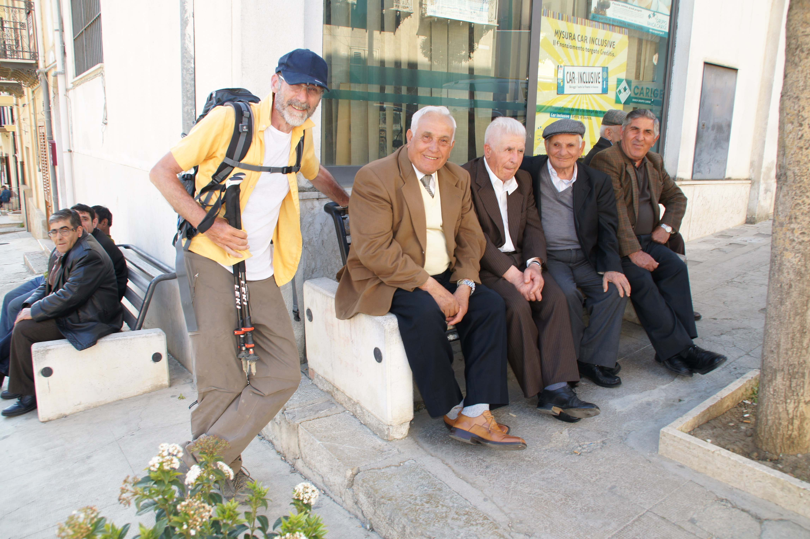
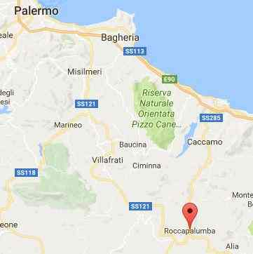 Am 21. Tag bei Rocca Palumba
Marmorsteinbruch am Tag 28
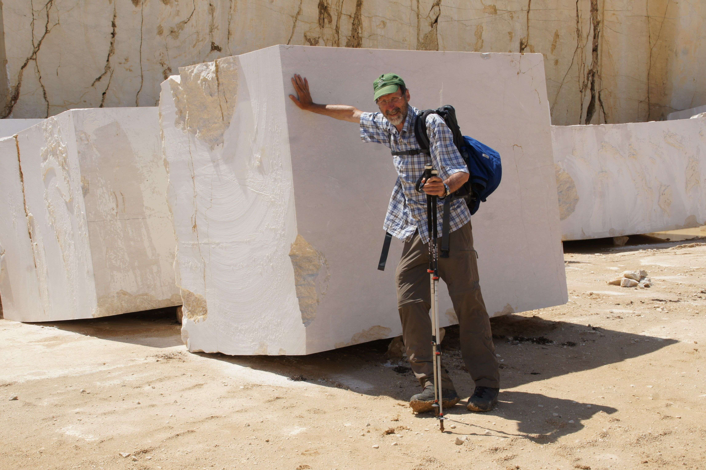
Tag 29
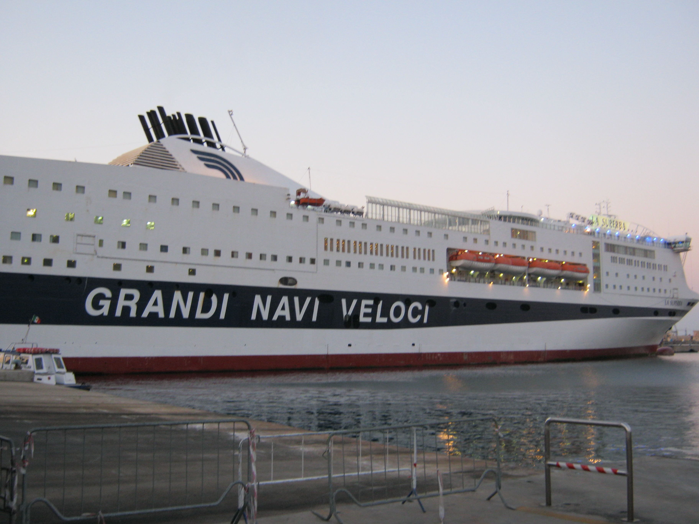Fähre in Palermo
Tag 30
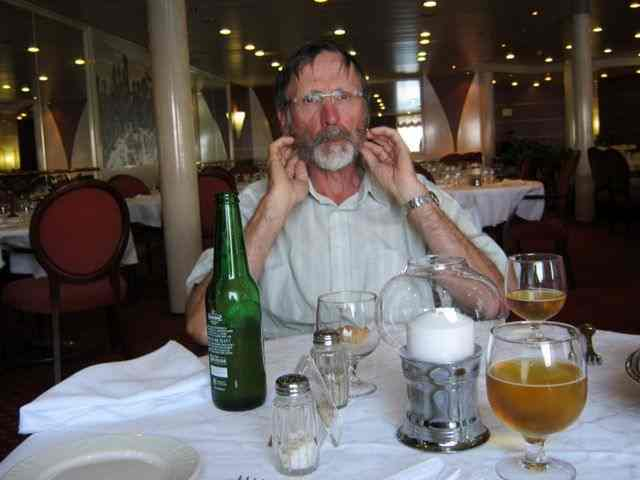Am 30. Tag, am 20. April 2011 endlich in der Fähre von Palermo nach Genua!